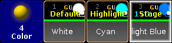
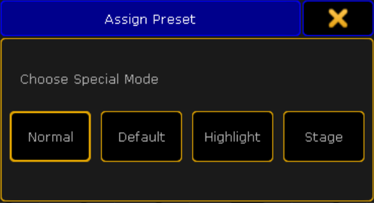

In addition to normal, there are three different special modes in the presets.
Default:
Default is used to modify the default values of attributes in single fixtures.
Highlight:
Highlight is used to modify the highlight values of attributes in single fixtures.
Stage:
Stage is used to modify the stage values of attributes in single fixtures. Stage values are enabled and disabled in the dialog Calibrate Fixture Pos. For more information see Auto calibrate fixture positions.
Normal:
Normal reverts the special mode of a preset.

Presets – special modes
To choose a mode:
First, store a preset with attributes which values are to be modified.
Press Assign and then tap the preset you would like to change.
Then press Please.
The pop-up Assign Preset opens.

Pop-up assign preset
Choose the special mode you would like to save your preset as.
After choosing a special mode, apply the fixtures to be modified with this preset.